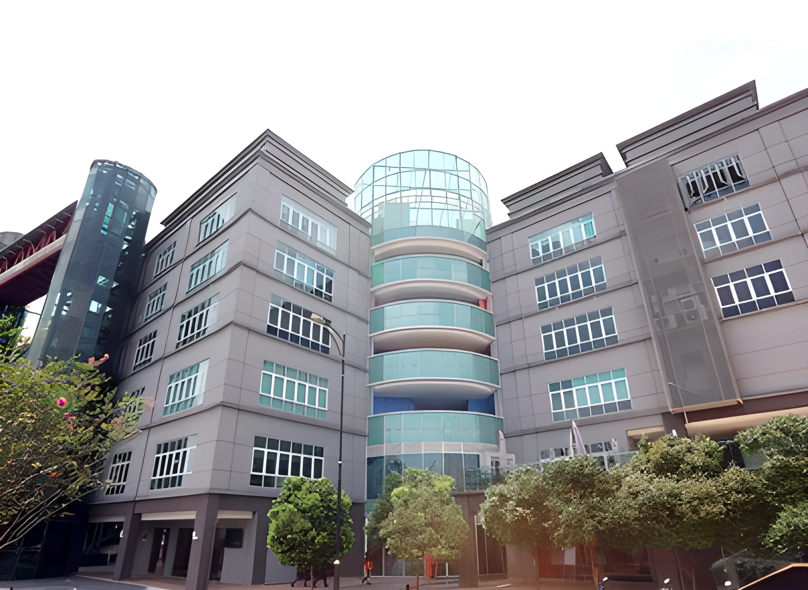

EDUCATION
I am currently studying at the Malaysian University of Science and Technology (MUST). I started my academic journey there by pursuing a Foundation in Business (FiB) program from 2021 to 2022. After completing the foundation program, I enrolled in a Bachelor's degree in Business Information Technology (BIT), which I am expected to complete by 2025. This educational path has equipped me with a solid understanding of business principles and the technological skills needed to thrive in the modern business environment.

Image by MUST University